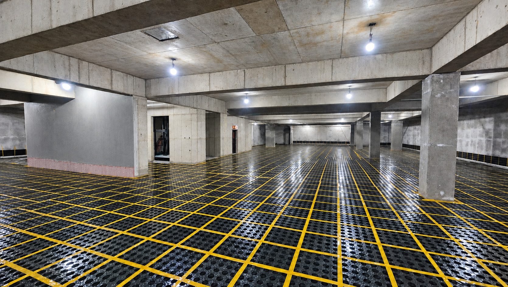
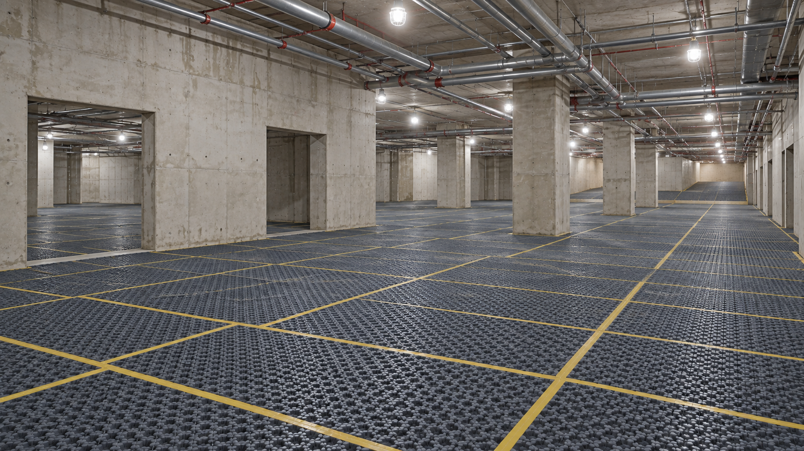
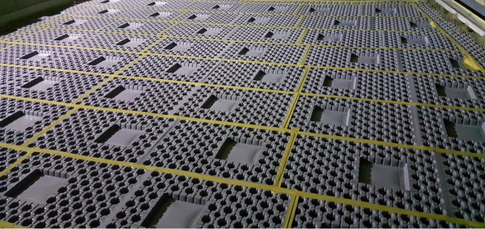
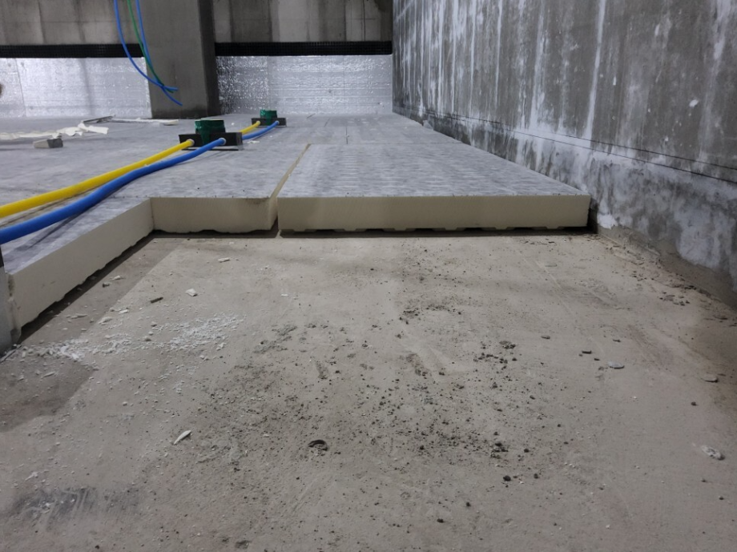
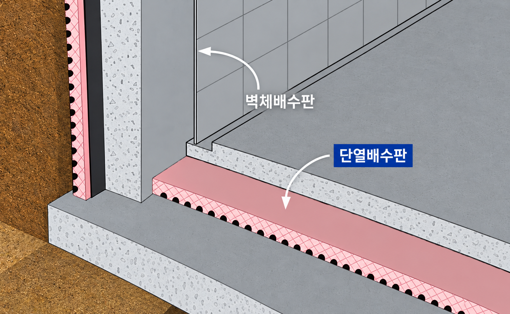
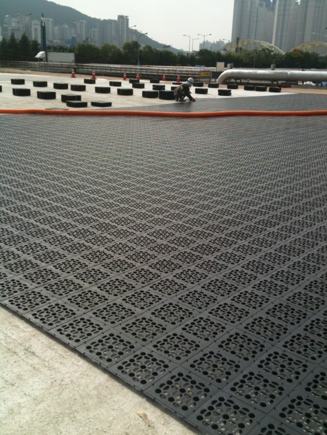
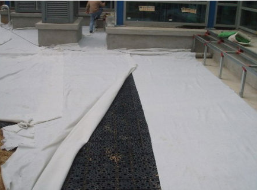

공통 핵심 특징
배수 성능·시공성·현장 적용성을 중심으로 설계합니다.
배수
배수 성능
물 고임을 줄이고 구조적 안정성을 지원합니다.
시공
시공 편의
모듈형 구성으로 현장 동선/구배/마감 조건에 맞춰 적용합니다.
적용
추천 적용
지하 바닥(주차장/공용부), 습기 취약 구간, 조경 구간
TM 바닥 배수판 사출형
지하 바닥층에 통수 공간을 확보해 배수·단열·시공 효율을 함께 높입니다.
- 1배수 통로 확보 — 침투수를 원활하게 유도합니다.
- 2결로 완화 — 공기층이 바닥의 온도 차를 줄입니다.
- 3안정적인 지지 — 사출 구조가 하중을 고르게 받습니다.
- 4빠른 배수 — 넓은 통수 단면으로 배수량을 확보합니다.
- 5다양한 규격 — 설계 높이와 현장 조건에 맞춰 선택합니다.
- 6간편한 시공 — 가볍고 재단·운반·설치가 쉽습니다.
- 7공기·비용 절감 — 조립 시공으로 공정을 단축합니다.

TM 바닥 배수판 매트형
넓은 구간을 빠르고 간편하게 시공할 수 있도록 설계한 장척형 배수판입니다.
730 × 2200
빠른 대면적 시공
- 1넓고 빠른 시공 — 한 장으로 넓은 면적을 시공해 작업 속도를 높입니다.
- 2간편한 설치 — 반복 작업을 줄여 현장 시공 과정을 단순화합니다.
- 3이음부 최소화 — 장척형 구성으로 연결 구간과 작업 횟수를 줄입니다.
- 4현장 대응력 — 구조와 구간에 맞춰 재단하고 배치하기 편리합니다.
- 5원활한 배수 — 연속된 통수 공간으로 물의 흐름을 안정적으로 확보합니다.
- 6공기 절감 — 시공 단계를 줄여 전체 작업 일정을 단축합니다.

TM 소음저감 배수판
차량 통행 충격·진동을 흡수하여 소음을 저감하는 구조
- 충격·진동 흡수로 쾌적성 향상
- 하중 분산 구조로 균열/컬링 등 하자 리스크 저감
- 지하주차장 등 차량 통행 구간에 적합
대표 규격
730 × 2220

TM 단열 배수판
결로·열손실 저감과 배수를 동시에 구현하는 배수 시스템
- 단열·배수 기능을 동시에 제공
- 지하층 결로 및 열손실 저감에 도움
- 현장 조건에 따라 일체형 / 분리형 선택
구성
일체형 / 분리형


TM 조경용 배수판
옥상·조경·보행로 등 식생 환경을 고려한 배수 솔루션
- 토양 내 수분 정체를 줄여 식생 환경 개선
- 경량 구조로 시공성 및 적용 범위 확대
- 옥상조경/조경 구간/보행로 등 다양한 용도
대표 규격
500 × 500


대표 규격
현장 조건에 따라 규격/두께는 변경·협의 가능합니다.
| 제품군 | 구분 | 대표 규격 | 비고 |
|---|---|---|---|
| 일반형 | 매트형 | 730 × 2200 | 대면적 시공 |
| 사출형 | 500 × 500 | 부분 교체/다양 구간 | |
| 소음저감 | — | 730 × 2220 | 차량 통행 구간 |
| 단열 | 일체형/분리형 | 현장 협의 | 지하층 결로/열손실 저감 |
| 조경 | — | 500 × 500 | 옥상/조경/보행로 |